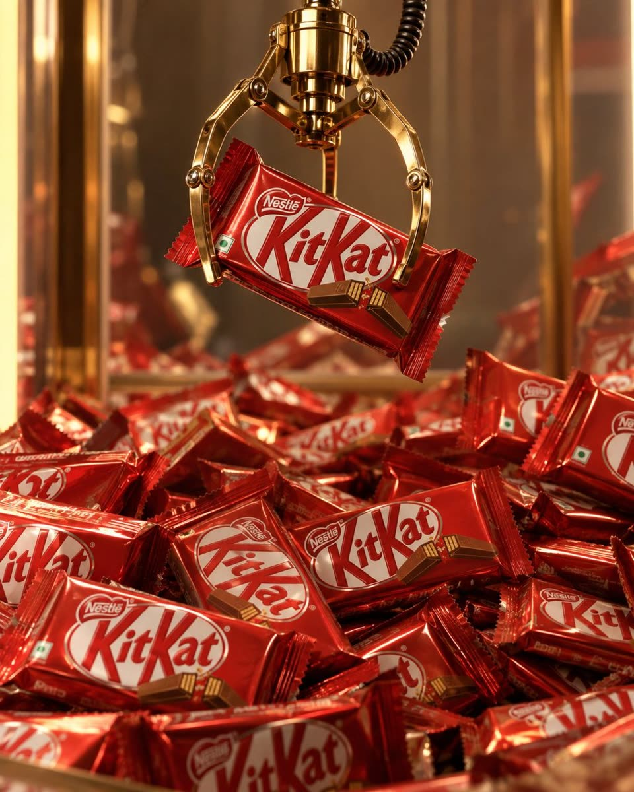

Claw-machine editorial product template
PRP-021Prop stylingGPT Image 2.5by Saul Goodman (@Goodmanprotocol)2026-09-22

Luxury claw/crane arcade machine concept for any [PRODUCT] — editorial product photograph template.
Prompt
Create a hyper-realistic premium editorial product photograph for [PRODUCT], inspired by a luxury claw/crane arcade machine, in a vertical 4:5 composition. A polished gold/brass metallic claw descends from the top of the frame, gripping and lifting one [PRODUCT] in the upper-center. Accurately visualize the product’s real-world shape, materials, packaging, colors, branding, and distinctive design. Below the claw, create a massive overflowing pile of identical [PRODUCT] items, naturally scattered and stacked across the lower two-thirds of the frame. Make every object physically believable with realistic scale, perspective, contact shadows, reflections, and depth. The claw mechanism features detailed articulated joints, gears, bolts, mechanical components, and a visible coiled cable extending upward, constructed from polished gold/brass metal with realistic reflections. Use a seamless warm studio background with a muted tone that naturally complements the product’s colors. Apply soft cinematic studio lighting, subtle warm highlights, realistic shadows, controlled reflections, and premium commercial photography aesthetics. The composition should instantly communicate a playful claw-machine concept while maintaining a sophisticated luxury advertising look. Sharp details, photorealistic materials, vibrant yet cohesive colors, realistic depth, clean framing, high-end editorial quality. Preserve the recognizable identity of [PRODUCT]. Do not invent unrelated packaging, alter its core design, add unnecessary text, or introduce extra branding. No text overlays, no watermark, no distorted objects, no malformed products. Aspect Ratio: 4:5 Style: Hyper-realistic premium commercial product photography generate for buldak
Tags: concept set, template, editorial product